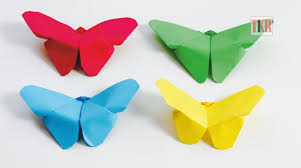
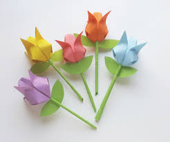
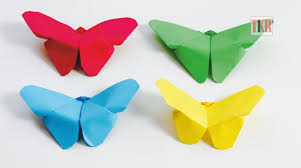
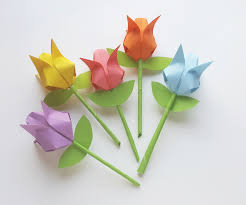

Origami Designs
About Us
 

Follow Us


Follow Us
Interesting Origami Facts!
- Origami is the art of folding paper, generally without cutting or gluing, that is believed to have originally started in the first or second century AD, in China.
- Origami generally involves folding a square piece of paper into a two or three dimensional object, while the most common or well known folded object is a paper crane (bird) or ‘orizuru’.
- In the sixth century AD, origami was introduced to Japanese people, and it eventually became ingrained into the Japanese culture, so much so, that it has been, and is still strongly associated with Japan.
- Some origami models have moving mechanisms once interacted with, and designs include simple jumping frogs and flapping wings to complex models of a figure playing a paper instrument
- Although folding paper in origami is typically performed by hand only on a smooth surface, tools including a scorer, embosser, paper clips and tweezers can be used for better folds or holds.
- Origami paper sizes typically range from 2.5 to 25 centimetre (1 to 10 inch) squares, although they can be larger, and the most common size is 15 cm (5.9 inches).